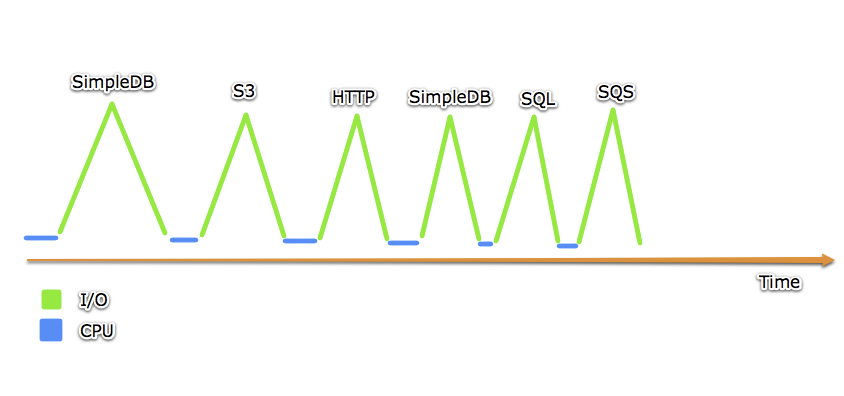
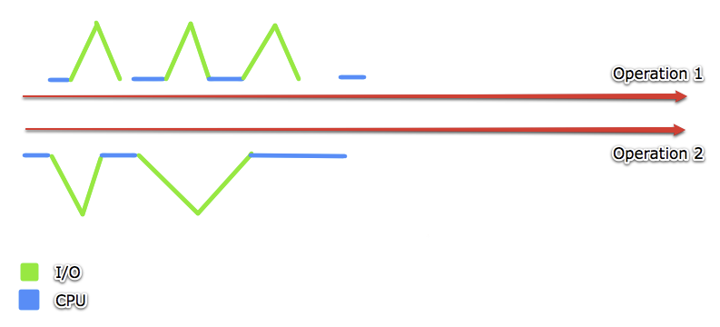

Concurrency
almost
without
threading
Who am I?
Gergo Sulymosi
chief git blame analyst
GH/Twitter: @trekdemo
Why should I care?
- The C10K problem - OK maybe it's not your problem
- Blocking I/O everywhere
-
Most probably you're wasting resources
- Does your typical application looks like this?
- Single Threaded
- 200MB (or more!) to process one request?!
- Load Average: 0.10 0.12 0.09
Blocking what?
Spent 90% waiting for IO, 10% doing actual work :(
...so what should I do?
When should I use?
- Many concurrent clients
- Slow clients
- Streaming
- Websockets
- Many I/O operation
What is EventMachine?
It's a toolkit for writing evented applications.
Who uses it?
Rainbows!
...and many more, sorry I'm lazy
What's the catch?
- Application code becomes callbacks (solved with Fibers)
- Error handling difficult
- Learning curve
- Lack of documentation
- Projects looking for maintainers
How it works
Synchronous code
balls = synchronous_ball_count(playground)
paint_red(balls)
roll_twice(balls)
deliver_to_shop(balls)
Async code
async_ball_count(small_playground) do |balls|
# called only after all balls counted
paint_red(balls) do
# called only after all balls painted to red
roll_twice(balls)
deliver_to_shop(balls)
end
end
async_ball_count(large_playground) do |balls|
paint_blue(balls) do
roll_twice(balls)
deliver_to_shop(balls)
end
end
The run loop
require 'eventmachine'
EventMachine.run do
# your code
end
What happens in the loop?
- Data sending and receiving,
- file reading and writing,
- network activity monitoring,
- connection creation,
- ... and your custom code.
Build something
for God's sake!44!!4
Create a basic mirror server!
When will my code run?
- Timers
EM::TimerEM::PeriodicTimer
EM.next_tickEM.defer( and where will my code run? )
EM::Deferrables
Isolate your custom evented logic!
- callbacks
- errbacks
I'm a bit late, it's 18:33

A few words about Fibers and EM::Synchrony
EM.stop
puts "Thanks"